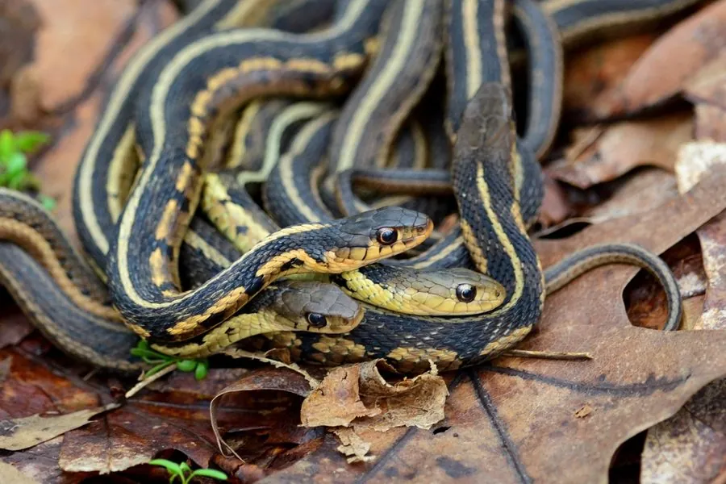

爬行动物 · 动物界
束带蛇 Thamnophis sirtalis

北美最常见的无毒蛇之一，背部有纵向条纹像袜带，适应力极强，是北美分布最广的蛇类之一，常见于生态研究中。
- 分类
- 门脊索动物门纲爬行纲目有鳞目科游蛇科属束带蛇属
- 栖息环境
- 北美洲的草地、森林、湿地、农田与城市边缘
- 地理分布
- 北美洲大部分地区
- 保护级别
- IUCN 无危（LC）；非中国原产，在中国无保护级别
物种志
束带蛇体长 0.5–1.2 米，身体细长，头部与颈部区分不明显；体色变化很大，通常以深绿、褐或黑色为底，背部有一条或数条纵向的黄色、白色或红色条纹，看起来像袜带，“束带蛇”之名由此而来，体侧还常带棋盘状斑点。
它广泛分布于北美洲的草地、森林、湿地、农田和城市边缘，适应力极强，白天活动，捕食蚯蚓、蛙类、鱼类、昆虫和小型哺乳动物。它的体色因地区不同变化明显，通常是深色底上带浅色纵纹。它是卵胎生蛇类，雌蛇一次产下 10–40 条幼蛇。束带蛇无毒，是北美最常见的蛇类之一，常被用作生物学研究材料；它对控制害虫和小型啮齿动物有益，在中国属于外来物种，不可随意放生。
形态与习性
- 食性蚯蚓、蛙类、鱼类、昆虫和小型哺乳动物
- 体长0.5–1.2 m
- 寿命约 10 年
- 繁殖卵胎生，每胎 10–40 条
- 活动节律昼行性
- 毒性无毒，对人无害
趣味知识
- 束带蛇背部的纵向条纹像一条袜带，因此得名“袜带蛇”。
- 它适应力极强，从森林到城市公园都能生存。
- 束带蛇是卵胎生蛇类，雌蛇直接产下活的幼蛇。